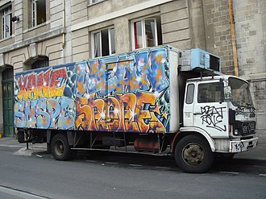

塗鴉（graffiti）是什麼？在國中課桌椅上用立可白寫的「王曉明喜歡陳小美」算是塗鴉嗎？在課本上幫古人加上鬍鬚和爆炸頭算是塗鴉嗎？一定要用噴漆罐創作才能算是塗鴉嗎？在維基百科上，塗鴉的定義是「在公共、私有設施或牆壁上的人為和有意圖的標記」。
其實，塗鴉並沒有一個明確的定義。
假設今天問有在塗鴉的人什麼是塗鴉，每個人給出的答案都會有些不同。有些人認為拿噴漆罐、流汁筆、麥克筆在路邊的牆面上非法的簽下自己的名字或標記是塗鴉，有些人認為只有拿噴漆罐在牆面上或任何平面上作畫才算塗鴉，也有些人認為只要是公開製作或展現自己的作品就算塗鴉，除了這些之外，還有各種不同的定義方式。而在我們網站中，主要收錄的是使用噴漆或油漆在公共場所創作的塗鴉作品。
塗鴉最早可以追溯至20-30萬年前的尼安德塔人，在那時他們已經懂得在洞穴內塗鴉。而第一個可以被稱為「現代塗鴉」的畫作位於古希臘城邦以弗所（今土耳其境內），另外古埃及和古羅馬人均有於他們的牆上或紀念碑前塗鴉，維京人在東征西討的同時也留下了大量塗鴉。拿破崙遠征埃及時，他的士兵也有在碑石上刻名留念。
到了20世紀，一種「到此一遊」的塗鴉在歐美各地流行起來。而到了第二次世界大戰，隨著戰機的盛行，在機身上塗鴉也流行起來。戰後，世界各地很多大城市都有一批如童黨（指邊緣社群）的人在各處的牆壁上塗鴉，多是留下自己的名字以宣示在塗鴉處附近的控制權。
20世紀末，這種行為開始和童黨脫離關係，慢慢變成一種個人創作。個人塗鴉所用的媒介也十分廣，包括牆壁、建築物，甚至貨運列車。

一些前衛藝術家在1960年代開始研究塗鴉的理念和用處。在斯堪地那維亞，甚至有一所專門研究塗鴉的學院。
雖然也可以戴口罩，但防毒面具可以更好的阻隔漆的味道和化學物質，而且…比較帥（誤），基本上噴漆專用的防毒面具規格都大同小異，選順眼的就行。
噴漆常常會把手弄得超級髒而且超難洗，所以許多塗鴉人都會選擇用3M的止滑手套，因為它比較貼手，可以在按噴頭時更準確的掌握出漆量。
許多塗鴉人在創作之前會先將原本的牆面刷白來讓自己的作品看起來更乾淨、更完整，也有些塗鴉人會拿來用在大面積的補色上。
母罐噴漆（在與噴頭接合處是凹進去的）是塗鴉最常用的媒材，特點是筆劃較粗適合大面積的創作，在台灣，通常會買國產「PP噴漆」，價錢是外國品牌的四分之一。
以前的塗鴉人在畫比較完整的圖前會先畫紙稿在素描本或筆記本上，在上牆噴漆時拿來參考，雖然現在很多人改成看手機或平板，但還是有一部分的人是看紙本草稿。
有非常多種類，用來製造不同效果，其中出漆量穩、粗度適中的New York Fat Cap（簡稱NY噴頭）最常見，而塗鴉用的大多都是公噴頭（與噴漆罐接合處是突出的）。